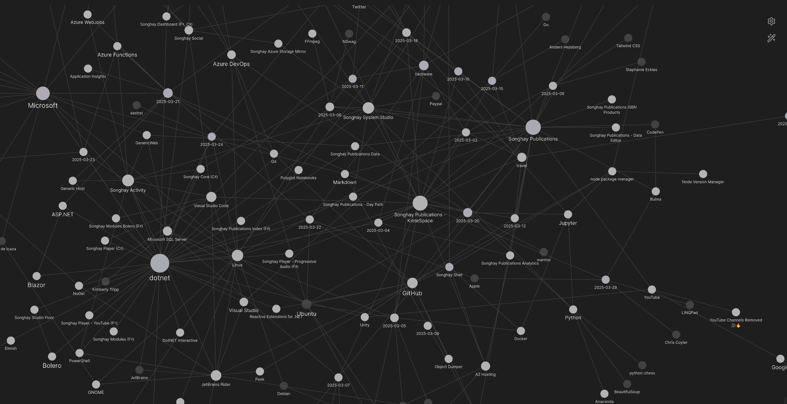

studio status report: 2025-03
month 03 of 2025 was about another #day-job takeover, serious progress with Azure Functions and AzDO
Selected notes for this month should show signs of major #day-job breakthroughs in the study of Azure Functions and the YAML pipelines of Azure DevOps (AzDO). Otherwise, we see in the Obsidian graph view most of the days of this month hover around .NET and Publications, representing ‘normal’ Studio operations:

[[SQL Azure]]: “10 Free Azure SQL Databases: Powering AI, Advanced Analytics & Enterprise Innovation | Data Exposed”
This video cautions us to pay attention to the “auto-pause” feature of the databases:

10 Free Azure SQL Databases: Powering AI, Advanced Analytics & Enterprise Innovation | Data Exposed
[[dotnet|.NET]]: SampleProject #to-do
🚀 SampleProject is a comprehensive template designed to kickstart your .NET 8 application development with best practices in architecture, DevOps, and API management.
…
- Clean Architecture & Design Patterns like CQRS
- Database Support: SQLServer, PostgreSQL
- Caching: Redis
- Messaging: RabbitMQ, Hangfire for background jobs
- Authentication: JWT Tokens & OAuth
- Containerization: Docker, pgAdmin, ELK Stack for logging and monitoring
- API Management: Minimal APIs, Swagger, Rate Limiting, Idempotency, and Versioning
“.NET Previews Unboxed - .NET 10 Preview 1, C# 14, HybridCache, & More”

.NET Previews Unboxed - .NET 10 Preview 1, C# 14, HybridCache, & More
Links from the video above:
- “Error CS8103 Combined length of user strings used by the program exceeds allowed limit. Try to decrease use of string literals.”
- “OpenAPI 3.1 support”
[[Katarzyna Dusza]] explains quite well how a [[b-roll player]] of streaming video would work

Modern & secure adaptive streaming on the Web - Katarzyna Dusza - CPH DevFest 2024
In the first 20 minutes of the video, she explains and demonstrates how MPEG-DASH streaming works without encryption and licensing.
- “A Quick Dive Into MP4”
- https://www.bento4.com/documentation/mp4fragment/
- https://www.bento4.com/documentation/mp4dash/
[[eleventy]]: updating the md-11ty sample
In order to get started with [[Songhay Publications - KinteSpace|the kinté space]], I need to update my Studio guidance in the form of the md-11ty sample [🔗 GitHub ]. The official eleventy starter site provides guidance as to what is now going on in the 3.x world of eleventy:
the conventional config file name changed
The file name has changed from md-11ty/11ty/.eleventy.js to md-11ty/11ty/eleventy.config.js.
changing to ECMA Script Modules (ESM)
We have ESM for the md-11ty/11ty/eleventy.config.js file [📖 docs ]:
export default function (config) {
//…
};
…which is a move away from the CommonJS pattern:
module.exports = function (config) {
//…
};
[!important] The new ESM pattern allows for loading static JSON files, using the
importstatement:
import staticJson from '../app-staging/data/static.json' with { type: 'json' };
export default function (config) {
config.addGlobalData('staticJson', staticJson);
//…
};
Use of the addGlobalData method [📖 docs ] is essential here. Also, note that “import attributes” [📖 docs ] are being used in the import statement, characterized by the with keyword.
the new conventional directory structure
The tree command from the md-11ty/ directory:
$ tree -d -I "*node_modules*"
.
├── 11ty
│ ├── _data
│ ├── entry
│ ├── other-entry
│ └── templates
│ └── layouts
└── app-staging
├── data
├── entry
│ └── one
└── not_in_a_collection
[[Entity Framework|Entity Framework Core]]: IDbSet<TEntity> should be thought of as a repository-pattern abstraction 🧠💡
The architecture of your data abstraction layer, using EF, will ultimately (in the context of sanity) take two approaches:
- defend against EF and design to optionally remove EF
- embrace EF
Option 1 can mean exploring the Generic Repository Pattern (see “Gentle introduction to Generic Repository Pattern with C#”) which will eventually replace or hide DbContext. Option 2 can mean exposing DbContext in the data abstraction layer and eventually regarding IDbSet<TEntity> [📖 docs ] as a bona fide repository-pattern abstraction.
[!important] The presence of [[Dapper]] alongside EF in the design should ultimately mean you have to ‘hide’ or ‘compose’ Dapper and EF which means you are in the realm of option 1.
The following video is a quick pitch for option 2:

DON’T Use Repositories with Entity Framework Until You Watch This
This slightly longer video explains why option 1 can be problematic:

Generic Repository Pattern With EF Core - Why It Sucks
Towards the last two minutes of the video, the critiques start to emerge. One annoyance is when multiple generic repos are injected into a class and consumers may not know that the SaveChanges method is duplicated across these abstractions when EF is behind the scenes.
In the following videos, [[Milan Jovanović]] goes into ‘nuance’ about this matter #to-do:

Repository Pattern With Entity Framework Core | Clean Architecture, .NET 6

How I Use The Generic Repository Pattern In Clean Architecture

Why I Use The Unit of Work Pattern With EF Core | Clean Architecture
Additional reading: “Implementing the Repository and Unit of Work Patterns in an ASP.NET MVC Application (9 of 10)” 📖
[[Typescript]] news from [[Anders Hejlsberg]] 😲
Surprising! The Typescript compiler is being ported to [[Go]]:

A 10x faster TypeScript
F♯ folks are excited about what’s on Anders’ bookshelf in this video:

TypeScript is being ported to Go | interview with Anders Hejlsberg
[[Azure DevOps|AzDO]]: pipelines breakthrough at the #day-job
- the
zipAfterPublishsetting inDotNetCoreCLI@2prepares an archive forAzureRmWebAppDeployment@4 - the
$(Build.ArtifactStagingDirectory)predefined variable [📖 docs ] flows through the task; it is the output ofDotNetCoreCLI@2task and the input of theAzureRmWebAppDeployment@4task - when we declare
DeploymentType: 'zipDeploy',enableCustomDeploymentmust be set totrue
Warning: webDeploy means MSDeploy; there is an ancient document for IIS that opens with this equivalence. For more detail, see “MSDeploy VS. ZipDeploy.”
questions [[Microsoft]] will not help you to ask about [[Azure Functions]] 😐 #make-blog-post
Note: the following note is abridged with ellipses (…) in anticipation of a Blog post in future.
why does Microsoft generate a static class and method in a new project?
Short answer: because it is the highest-performance and most primal way to build Azure Functions.
…
how does DI work with a bunch of static classes?
Short answer: it should not. When building Azure Functions with DI, stop using static classes and take the slight performance hit, including cold-start time.
…
why does Microsoft generate the HttpTrigger example with HttpRequest instead of HttpRequestMessage?
The HttpRequest definition [📖 docs ] predates the HttpRequestMessage [📖 docs ]. So the Microsoft collective thinking must be:
- Azure Function method signatures probably only supported
HttpRequestinitially. - More developers—especially [[ASP.NET]] developers—are familiar with
HttpRequest.
…
why does logging not work within my dependencies?
…
In either case, with or without Application Insights, setting the log level in the host.json file should turn on logging among the dependencies.
open pull requests on GitHub 🐙🐈
- https://github.com/BryanWilhite/Songhay.HelloWorlds.Activities/pull/14
- https://github.com/BryanWilhite/dotnet-core/pull/67
sketching out development projects
Eliminating Angular JS in the Studio is the top priority. Replacing the Angular JS app (http://kintespace.com/player.html) for the kinté space depends on:
- generating a new
index.htmlpage with eleventy - supplementing the index with responsive images
Proposed future items:
- complete upgrade to .NET 8.0
- replace current b-roll player API with Azure Functions
- switch Studio Publications from Material Design to Bulma 💄 ➡️ 💄✨
- start
Songhay.Modules.Bolero.Indexproject - generate responsive and social images with AI